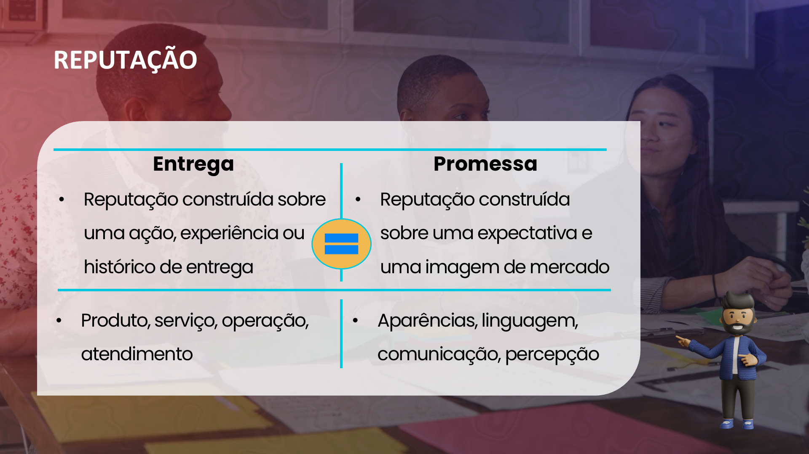
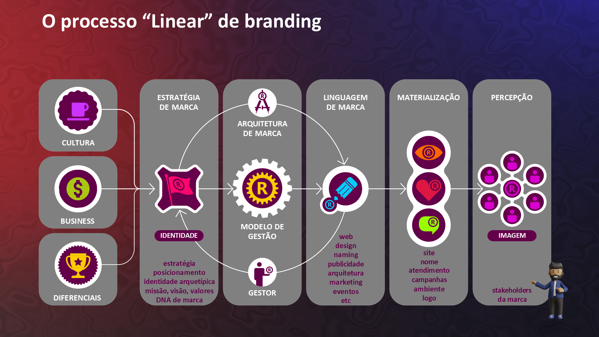
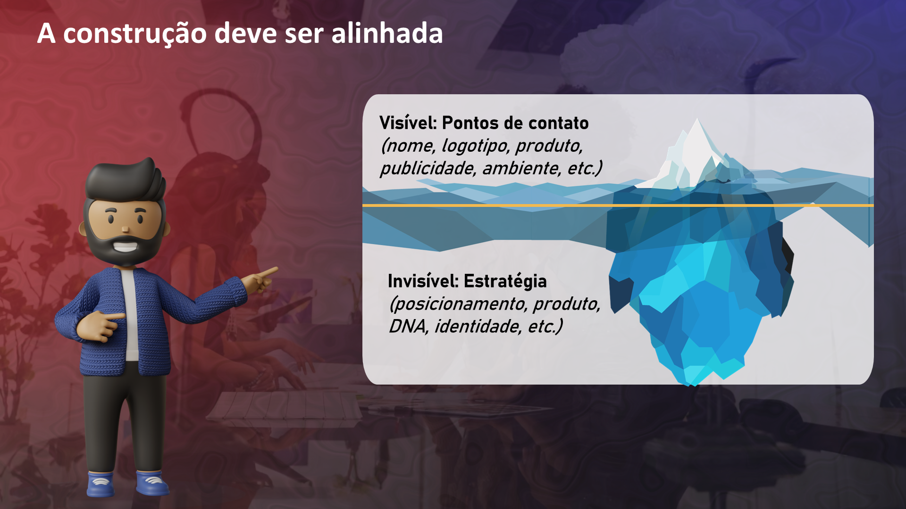

flowchart TB
R["REPUTAÇÃO DA MARCA"]
R --> E["ENTREGA<br/>(o que você faz)"]
R --> P["PROMESSA<br/>(o que você comunica)"]
E --> E1["Produto"]
E --> E2["Serviço / Atendimento"]
E --> E3["Operação / Logística"]
P --> P1["Aparência / Identidade"]
P --> P2["Linguagem / Comunicação"]
P --> P3["Narrativa / Percepção"]
style R fill:#2e7d32,color:#fff
style E fill:#e8f5e9
style P fill:#e8f5e9
2 O Que É Branding e Por Que Importa no Agro
Branding não é logotipo, slogan ou embalagem bonita. É o processo estruturado de construção e gestão da reputação de uma marca, e pode transformar a forma como o agronegócio brasileiro gera valor.
2.1 Marca não é o que você pensa
Quando perguntamos a um produtor rural “o que é uma marca?”, as respostas mais comuns giram em torno de logotipo, nome do produto, embalagem ou propaganda. Todas essas respostas estão incompletas. Logo, nome, embalagem e propaganda são manifestações da marca, são suas roupas, sua aparência. Mas uma marca é muito mais do que a roupa que veste.
2.1.1 Marca é reputação
Uma marca é a soma de todas as percepções, experiências e associações que as pessoas têm em relação ao seu negócio, produto ou serviço. Em outras palavras, marca é reputação.
Quando alguém menciona “Café do Cerrado Mineiro”, uma série de associações se forma na mente de quem ouve: altitude, clima de cerrado, grãos densos, sabor encorpado, tradição cafeicultora. Essas associações, positivas ou negativas, são a marca.
Quando alguém menciona o nome da sua fazenda ou cooperativa, o que vem à mente do seu comprador? Essa resposta é a sua marca. Não o logotipo impresso no saco, mas o que vai dentro da cabeça de quem compra.
NotaDefinição prática
Marca = o que as pessoas pensam, sentem e dizem sobre você quando você não está presente.
2.2 Entrega e promessa: os dois pilares da reputação

A reputação de uma marca no agro se constrói sobre dois pilares fundamentais:
2.2.1 Pilar 1, Entrega
A reputação construída sobre ações concretas, experiências e histórico de entrega. No agro, ela se materializa na qualidade consistente do produto, na pontualidade das entregas, na honestidade das negociações, no atendimento ao comprador e na rastreabilidade com transparência.
A entrega é o alicerce. Sem uma entrega consistente, nenhuma estratégia de marca sobrevive. Um logotipo bonito não salva um café com defeitos ou uma fruta que chega deteriorada.
2.2.2 Pilar 2, Promessa
A reputação construída sobre expectativas e imagem de mercado. Engloba a identidade visual (logo, cores, embalagem), a linguagem com que a marca se comunica, a presença digital (site, redes sociais), a narrativa que conta e a percepção de valor que o mercado forma a seu respeito.
A promessa é o que atrai o comprador antes que ele experimente seu produto. É o que cria expectativa, curiosidade e desejo.
2.2.3 O erro mais comum
O erro mais frequente no agro é acreditar que apenas a entrega basta. “Meu produto é bom, fala por si mesmo.” Em um mercado com excesso de oferta, o produto não fala por si. Milhares de produtos bons ficam invisíveis porque não articulam uma promessa clara, não constroem uma narrativa e não criam uma percepção de valor diferenciada.
O outro extremo, prometer sem entregar, é igualmente destrutivo. Propaganda sem substância gera frustração e destrói reputação.
A marca forte é aquela em que promessa e entrega estão alinhadas.
2.3 Modelos de gestão: do monopólio ao branding
Para entender onde o branding se encaixa, é útil observar como os modelos de gestão evoluíram historicamente:
2.3.1 Modelo 1, Monopólio (produção)
Quando existe um único fornecedor ou muito poucos, a lógica de gestão se reduz a produzir. O mercado absorve tudo o que é ofertado porque não há alternativa, e a demanda supera ou equivale à capacidade de oferta. Nesse cenário, o produtor não precisa se preocupar com diferenciação, comunicação ou imagem, pois a simples disponibilidade do produto já garante a venda. É o modelo que caracterizou, durante décadas, muitas commodities agrícolas em mercados locais isolados, como o único laticínio de uma microrregião, o fornecedor exclusivo de hortaliças para uma feira municipal ou o pecuarista que abastece sozinho o frigorífico da cidade vizinha. A ausência de competição gera conforto, mas também fragilidade, já que o produtor que opera sob a lógica do monopólio não desenvolve nenhuma competência de marca e, quando a concorrência inevitavelmente surge, encontra-se desprovido de argumentos para reter seus compradores.
2.3.2 Modelo 2, Vendas (distinguir)
A partir do momento em que surgem concorrentes, o problema deixa de ser produzir e passa a ser vender mais que o outro. O foco migra da capacidade produtiva para a capacidade de convencimento. A comunicação se orienta a destacar atributos tangíveis e comparáveis do produto, como volume, preço, velocidade de entrega ou tamanho. É a lógica do vendedor de feira que grita mais alto para atrair o comprador que está passando. No agro, esse modelo se manifesta quando duas cooperativas da mesma região disputam o mesmo atacadista oferecendo condições de pagamento mais flexíveis, descontos por volume ou prazos de entrega menores. O problema desse modelo é que a competição se trava exclusivamente em atributos facilmente igualáveis, o que leva a uma espiral de concessão de vantagens (preços menores, prazos maiores, brindes) que corrói margens sem construir nenhum ativo de longo prazo. O produtor que vive no modelo de vendas está sempre correndo atrás do próximo pedido, sem acumular reputação.
2.3.3 Modelo 3, Marketing (diferenciar)
Com muitos concorrentes oferecendo produtos similares e atributos tangíveis cada vez mais parecidos, surge a necessidade de ir além da venda e construir uma percepção de diferenciação na mente do comprador. O marketing cria estratégias para que o produto seja percebido como único, mesmo quando, funcionalmente, é muito próximo dos concorrentes. Isso envolve segmentação de público (identificar para quem exatamente o produto se destina), embalagem e apresentação visual (packaging que comunica qualidade e origem), promoções sazonais, escolha estratégica de canais de distribuição e definição de um posicionamento de preço coerente com a proposta de valor. No agro, o modelo de marketing aparece quando um produtor de café obtém certificação orgânica, desenvolve uma embalagem premium e passa a vender diretamente em lojas de especialidade, em vez de entregar a granel para um intermediário. A diferenciação funciona enquanto o concorrente não a imita, e esse é precisamente o limite do marketing como modelo isolado, pois certificações se multiplicam, embalagens são copiadas e canais de distribuição são acessíveis a qualquer competidor com capital suficiente.
2.3.4 Modelo 4, Branding (relacionar)
No mercado atual, onde até os diferenciais estratégicos do marketing são replicados com velocidade crescente, o branding propõe o estágio mais avançado de gestão, que consiste em construir uma relação entre a marca e seus públicos. Não basta ser diferente; é preciso ser relevante, memorável e desejado. Enquanto o marketing opera sobre a percepção do produto, o branding opera sobre a percepção da marca como entidade que possui valores, personalidade e propósito. Uma marca que alcança o estágio de branding não precisa gritar atributos, porque já ocupa um espaço afetivo e cognitivo na mente do seu público. No agro, isso se materializa quando o consumidor não compra “um mel orgânico qualquer”, mas procura especificamente o mel da marca X porque confia na história da família produtora, se identifica com os valores de preservação ambiental que a marca comunica e sente que faz parte de algo maior ao escolhê-la. A relação é o ativo mais difícil de copiar, porque não está no produto, na embalagem ou no canal, mas sim no vínculo emocional e simbólico que o público construiu com a marca ao longo do tempo.
| Modelo | Lógica | Foco | Exemplo no Agro |
|---|---|---|---|
| Monopólio | Produzir | Oferta | Único produtor de leite da região |
| Vendas | Vender | Comunicação | “Compre nosso café, o melhor preço!” |
| Marketing | Diferenciar | Percepção | Café com certificação orgânica e embalagem premium |
| Branding | Relacionar | Reputação | Marca de café que conta a história da fazenda, conecta com valores do consumidor e cria comunidade |
2.4 O que é branding, afinal?

Com essa base, podemos definir branding de forma precisa:
NotaDefinição
Branding é o processo estruturado de gestão e construção da imagem, da reputação e do valor percebido de uma marca ao longo do tempo.
Não é uma ação pontual (criar um logotipo), mas um processo contínuo de gestão estratégica.
O branding responde a três perguntas fundamentais:
- Qual reputação queremos construir? Definição de posicionamento e identidade.
- Como vamos construir essa reputação? Estratégia, linguagem e pontos de contato.
- Estamos construindo a reputação certa? Métricas, avaliação e ajuste.
2.4.1 O que o branding NÃO é
Branding não se reduz à criação de um logotipo ou identidade visual, tampouco se confunde com fazer propaganda ou postar em redes sociais. Não é moda passageira nem privilégio de grandes corporações, não equivale a gastar dinheiro com publicidade sem estratégia e, sobretudo, não consiste em mentir sobre o produto ou fabricar uma imagem falsa.
2.5 Brand equity: o valor que a marca cria
O resultado de um trabalho consistente de branding é o brand equity, o valor adicional que a marca confere ao produto ou serviço, para além do seu valor funcional.
No agro, brand equity se manifesta de formas concretas e mensuráveis. Há o preço premium, quando o café da fazenda X é vendido por R$90/kg enquanto o genérico da mesma região sai por R$35/kg, sendo a diferença de R$55 pura expressão de brand equity. Há a preferência, quando o comprador de uma rede escolhe o mel da marca Y mesmo existindo alternativas mais baratas. Há a resiliência, que permite à marca Z manter seus clientes durante crises enquanto produtores sem marca perdem contratos. Há o acesso a mercados, pelo qual a marca com reputação forte é convidada para feiras, conquista espaço em prateleiras premium e atrai distribuidores. E há o poder de negociação, que permite ao produtor com marca forte negociar de igual para igual com compradores, em vez de aceitar preços impostos.
2.6 Por que o branding é urgente para o agro brasileiro
O agronegócio brasileiro é o maior exportador de alimentos do mundo, mas a maioria dos produtos brasileiros chega ao mercado internacional como commodity sem identidade. Enquanto a Colômbia construiu a marca “Juan Valdez” para seu café e a Nova Zelândia posicionou o kiwi Zespri como marca global, o Brasil ainda exporta predominantemente à granel, sob marcas de traders internacionais.
Isso significa que o valor da marca fica com o intermediário, não com o produtor.
Internamente, a situação se repete: cooperativas leiteiras entregam leite sem marca para laticínios que constroem as próprias marcas. Fruticultores vendem para atacadistas que reembalam e remarcar a produção. O produtor fica com a margem da commodity; o dono da marca fica com a margem do valor percebido.
O branding no agro não é luxo, é sobrevivência estratégica.
2.7 Ferramentas e habilidades necessárias

Um programa completo de gestão de marca mobiliza competências diversas, que serão desenvolvidas ao longo deste livro. Parte-se do diagnóstico e análise para compreender o negócio, o mercado e os concorrentes. Em seguida, elabora-se uma estratégia de diferenciação capaz de identificar aquilo que torna a marca única, o que conduz ao posicionamento, isto é, à definição do espaço que a marca ocupará na mente do público. A partir daí, constroem-se a identidade e a plataforma de marca (propósito, valores, personalidade), que informam a gestão da linguagem, padronizando a expressão da marca em todos os pontos de contato. Esses pontos de contato são, por sua vez, mapeados e otimizados, e todo o ciclo é monitorado por métricas e avaliação contínua, para verificar se a reputação desejada está de fato sendo construída.
DicaNão se assuste
Ninguém domina todas essas habilidades de uma vez. Este livro é uma jornada. O mais importante é começar, e começar pela estratégia, não pela execução.
2.8 Exercício prático, Autoanálise inicial
Antes de avançar, responda estas perguntas sobre o seu negócio agropecuário:
2.8.0.1 🌿 Ferramenta: Autoanálise de Marca no Agro
Quem somos / Quem não somos:
- Quem é o seu negócio, além do óbvio? O que o define?
- Com quais modelos de negócio do agro você não se identifica?
O que fazemos / O que não fazemos:
- Quais produtos e serviços você entrega? O que promete ao comprador?
- O que você deliberadamente não faz ou não oferece?
Como fazemos / Como não fazemos:
- Qual é o seu jeito de produzir, atuar e entregar?
- Qual forma de atuação não é a sua?
Por que fazemos assim / Por que não fazemos de outra forma:
- O que motiva as suas escolhas de produção e gestão?
- Por que você não adota outros caminhos?
Registre suas respostas. Elas serão matéria-prima ao longo de todo o livro.